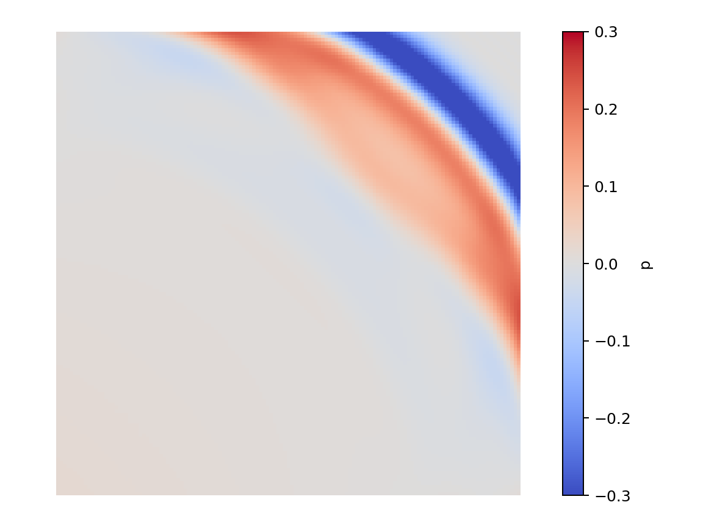

|
Peano
|
|
Peano
|
This first tutorial walks through a complete, worked example: a linear ADER-DG solver for the acoustic equations, driven by a point source. A short pulse fired near the bottom-left corner of the box radiates an expanding circular sound wave. By the end you will have built, run and visualised your first ExaHyPE 2 application. The matching notebook is tutorials/01_acoustic/AcousticWaves.ipynb, and the C++ implementation lives next to it in ADERDGSolver.cpp.
We solve the two-dimensional acoustic equations for the pressure \(p\) and the velocity \(\mathbf{v} = (v_1, v_2)\), with a source on the pressure equation:
\( \begin{equation*} \frac{\partial}{\partial t}\left( \begin{array}{l} p \\ v_1 \\ v_2 \end{array} \right) + \nabla \cdot \begin{pmatrix} K_0 v_1 & K_0 v_2 \\ \frac{p}{\rho} & 0 \\ 0 & \frac{p}{\rho} \end{pmatrix} = \begin{pmatrix} s(\mathbf{x}, t) \\ 0 \\ 0 \end{pmatrix} \end{equation*} \)
The density \(\rho = 1\) and bulk modulus \(K_0 = \rho c^2 = 1\) are constant, so the waves travel at the speed of sound \(c = \sqrt{K_0/\rho} = 1\), which is the largest eigenvalue of the flux. The right-hand side \(s(\mathbf{x}, t)\) is the point source: a Gaussian pulse in time injected at a single point near the bottom-left corner of the domain. To implement this PDE we therefore need a flux**, the maximum eigenvalue, and a point source.
The notebook starts by importing the API and defining a project - the domain and discretisation, independent of the PDE:
import exahype2
my_project = exahype2.Project(
namespace = ["tutorials", "exahype2", "acoustic"],
project_name = "Acoustic",
executable = "Acoustic",
dimensions = 2,
size = [ 2.0, 2.0],
offset = [-1.0, -1.0],
periodic_bc = [False, False],
)
The domain is a \(2 \times 2\) box centred on the origin with non-periodic boundaries, so the expanding wave reflects when it reaches the walls. The end time, snapshot count and grid resolution are supplied at run time (see below).
Next we choose the numerical scheme - an ADER-DG solver of polynomial order 5, named ADERDGSolver:
aderdg_solver = exahype2.solvers.aderdg.GlobalAdaptiveTimeStep(
name = "ADERDGSolver",
order = 5,
time_step_relaxation = 0.9,
unknowns = {"p": 1, "v": 2},
auxiliary_variables = {},
)
The name determines the generated C++ class and the output file prefix, so we reuse it when visualising. The unknowns are given as a dictionary so we can address them by name in C++ (v has multiplicity two for the two velocity components). The time_step_relaxation of 0.9 is the usual safety factor on the stable time-step size.
We declare which PDE terms we implement - the flux, the maximum eigenvalue, and the initial and boundary conditions - and register the point source through the dedicated point-source API (number_of_point_sources, point_source, init_point_source_location). Because the system is linear we switch on the optimised linear ADER-DG kernels, which the point-source API also requires:
aderdg_solver.set_implementation(
initial_conditions = exahype2.solvers.PDETerms.User_Defined_Implementation,
boundary_conditions = exahype2.solvers.PDETerms.User_Defined_Implementation,
flux = exahype2.solvers.PDETerms.User_Defined_Implementation,
max_eigenvalue = exahype2.solvers.PDETerms.User_Defined_Implementation,
number_of_point_sources = 1,
point_source = exahype2.solvers.PDETerms.User_Defined_Implementation,
init_point_source_location = exahype2.solvers.PDETerms.User_Defined_Implementation,
)
aderdg_solver.add_kernel_optimisations(is_linear=True)
my_project.add_solver(aderdg_solver)
Finally we register our implementation file and generate and compile the solver:
my_project.output.makefile.add_cpp_file("ADERDGSolver.cpp")
my_project.generate_and_build()
ADERDGSolver.cpp provides the PDE terms. The conserved variables are addressed through the generated Shortcuts enum (Shortcuts::p, Shortcuts::v + 0/1). maxEigenvalue returns the sound speed \(c\); flux fills the flux for the requested normal direction; initialCondition sets a quiescent state (the waves come entirely from the source); boundaryConditions prescribes a zero exterior state to reflect off; and pointSource and initPointSourceLocations define the Gaussian point source and place it near the bottom-left corner.
The build produces an executable that is configured entirely through command-line flags - no recompilation is needed to change the run:
export OMP_NUM_THREADS=4 ./Acoustic -et 2.2 -ns 22 -l 3
Here -et is the end time, -ns the number of snapshots, and -l the uniform mesh level: level \(\ell\) covers the domain with \(3^\ell\) cells per direction. OMP_NUM_THREADS runs the solver on four OpenMP threads. The notebook then renders the snapshots with an interactive time slider:
from postprocessing import render_solution
render_solution.show_solution("ADERDGSolver", field="p")
By the end of the run the wave has expanded from the source in the bottom-left and swept across to the upper-right of the domain:

Drag the slider to watch the wave expand from the source and reflect off the walls.
field="v" to show_solution.-l to 4 and re-run (no rebuild needed).-et (and -ns) to follow the wave reflecting off the far walls.ADERDGSolver.cpp and rebuild.When you are comfortable with the workflow, continue with Part 2 - The Shallow Water Equations, where you implement a non-linear solver yourself - and meet static mesh refinement.